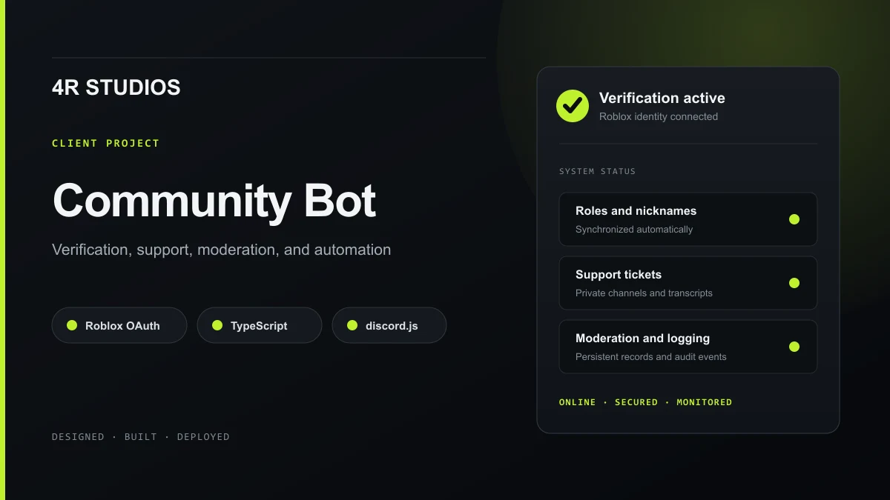

4R Studios Community Bot

Visit the 4R Studios server ↗A production Discord community bot developed and deployed for 4R Studios. The system connects a Roblox community's verification, support, moderation, engagement, and operational tooling in one configurable application. The client has approved linking the live community server from this portfolio.
Roblox verification
- Native Roblox OAuth 2.0 authorization with PKCE
- Profile code verification available as a fallback
- Duplicate account protection and account unlinking
- Automatic Discord role and nickname synchronization
Community operations
- Category based private support tickets with staff claiming and transcripts
- Persistent warnings, timeouts, bans, message purging, and moderation logs
- Persistent giveaways with role requirements, multiple winners, and rerolls
- Welcome messages, self role panels, announcements, and detailed audit logging
Security and deployment
- Short lived authorization sessions with state, nonce, and PKCE validation
- OAuth tokens discarded after verification and secrets stored outside the codebase
- Permission checks, protected mentions, rate limits, and role hierarchy validation
- Continuous hosting with Docker, Caddy HTTPS, health monitoring, and database backups
I designed, developed, tested, and deployed the complete bot, including its command architecture, OAuth pages, database structure, moderation tools, ticket workflow, security controls, and production infrastructure.